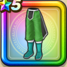

ポップの服下
攻略班 7.0点 / 麻痺耐性+5%魔王ハドラーへの耐性+10%怯え耐性+10%麻痺耐性+5%怯え耐性+5%【賢者】じゅもんダメージ+3%
くわしい特徴
【レベル別習得スキル】 Lv1麻痺耐性+5% Lv5魔王ハドラーへの耐性+10% Lv8すばやさ+5 Lv10怯え耐性+10% Lv12【賢者】じゅもんダメージ+3% Lv15魔力の暴走率+3% Lv18麻痺耐性+5% Lv20【賢者】さいだいHP+5 Lv23守備力+7 Lv25怯え耐性+5% 【限界突破スキル】 1凸こうげき魔力+5 2凸すばやさ+7 3凸守備力+5 4凸さいだいHP+10